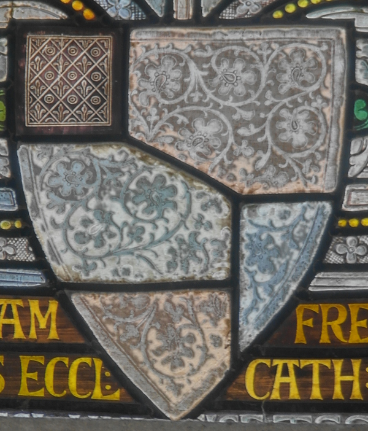

Posted to: The Google+ Heraldry Community
Posted by: Karl Wilcox
Created on: December 8 2012 at 23:53
Here is a genuine puzzle for you, what is the correct blazon for this shield? Here's what I know:
Sir Richard Sutton, first Baronet of Norwood had two sons, Augustus and Frederick. Augustus took to religion and was ordained as a priest, although both brothers became Prebendary's of Lincoln Cathedral. Frederick also had an interest in church organs, being the author of the snappily titled book "Church organs their position and construction: within appendix containing some account of the mediaeval organ case still existing at old Radnor South Wales", published in 1883 and, remarkably, still in print. The brothers also found time to dabble in amateur stained-glass making, eventually persuading the cathedral authorities to let them have a go at a window in the cathedral. This was a success, and they went on to complete over 30 windows in the cathedral and other Lincolnshire churches. Their work was honoured with memorials in the chapter house at the end of the 19th century. The memorials taking the form of shields of arms. That of Augustus is quite conventional, being the normal arms of Sutton, "Argent, a Canton Sable". Frederick's shield however is that shown below. Clearly it is based on that of Sutton, but the other parts of the shield are totally unknown to me. Suggestions as to the correct blazon are welcome!
